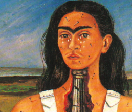
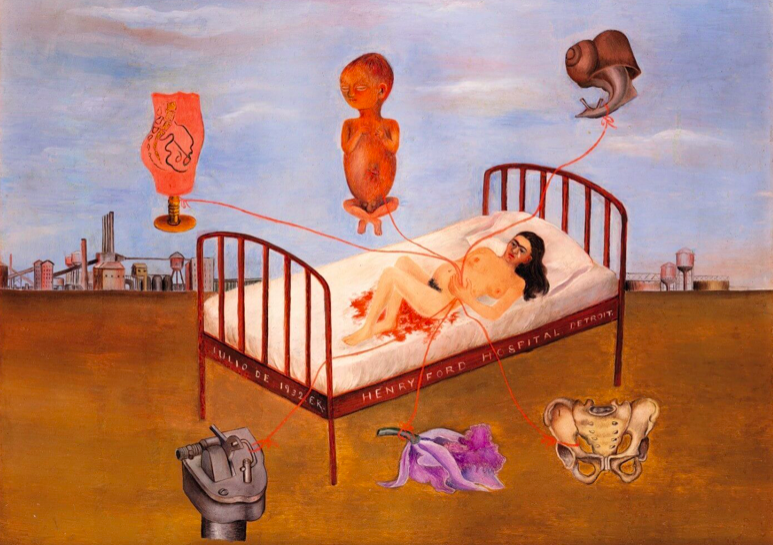
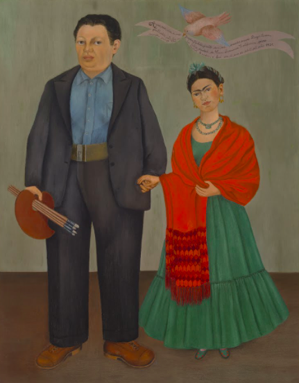

Frida Kahlo
1907-1954
Frida always claimed to be born on 1910, the year of the outbreak of the Mexican revolution, so that people could directly associate her with the modern Mexico.
This detail well introduces us to a singular personality, characterized since her childhood by a deep sense of independence and rebellion against ordinary social and moral habits, moved by passion and sensuality, proud of her "Mexicanidad" and cultural tradition set against the reigning Americanization: everything mixed with a peculiar sense of humour.
Her life was marked by physical suffering, started with the polio contracted at the age of five and worsen by her life-dominating event occurred in 1925. A bus accident caused severe injuries to her body owing to a pole that pierced her from the stomach to the pelvis. The medicine of her time tortured her body with surgical operations (32 throughout her life), corsets of different kinds and mechanical "stretching" systems.
Lots of her works were painted laying in the bed. Drawing on personal experiences, her miscarriages, and her numerous operations, Kahlo's works are often characterized by portrayals of pain. Of her 143 paintings, 55 are self-portraits which often incorporate symbolic portrayals of physical and psychological wounds.
Frida Kahlo
Self-Portrait with Thorn Necklace and Hummingbird
1940
Frida Kahlo
The Broken Column
1944
Frida Kahlo
Henry Ford Hospital
1932
Frida Kahlo
Frida and Diego
1931
Frida Kahlo
Viva La Vida
Frida Kahlo
The Wounded Deer
1946
Frida Kahlo
The Two Fridas
1939